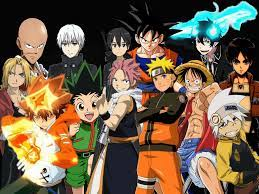
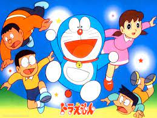
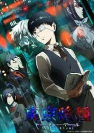

shonen is a very basic genre of anime in this genre you will go on a awesome roler coaster of emotion sometimes you will cry and sometimes you will laugh basically the target audience of these animes are teen boys but all age groups can enjoy these animes for recomendations check our link below
link-top 5 shonen animes
kodomo animes are basicaly those animes almost all of us have watched in our childhood wait,you dunno!!! welp have ya'll ever watched shin-chan,pokemon & beyblade yea ik that rings a bell so basically the target audience of these animes are small kids although i still enjoy these animes lol for more recommendations check the link below
link-top 5 kodomo animes
seinen animes actually contains different catagories for eg.- horror,mystry,echhi etc. while watching these animes you should be carefull that the anime is safe for you or not but don't worry i will only include the animes you can watch freely and you will enjoy
link-top 5 seinen animes
